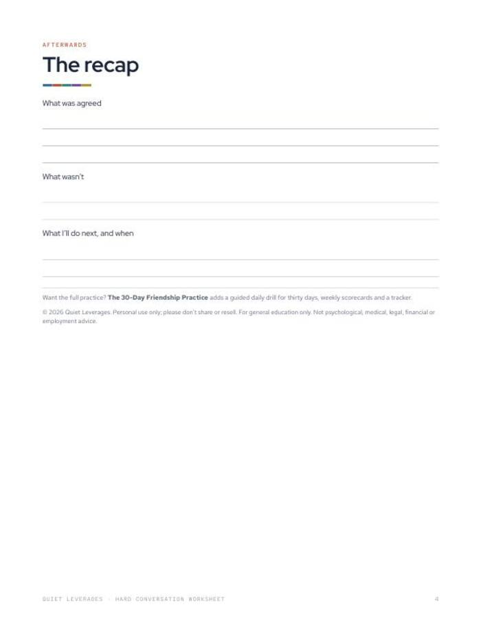

The conversation you keep putting off still needs a first sentence.
Prepare it on paper: the facts, both stories, what you want afterwards, and how you will close it.
Instant download. Print it or use it on a tablet with any PDF app. Prints fine on A4 at 'fit to page'.

Facts first
Write only what a camera would have recorded: dates, words, actions.
Both stories
The story you are telling yourself, and a reasonable version of the one they might be telling.
A recap for afterwards
A last page to record what was agreed, what was not, and what happens next.
preparation pages
recap page for afterwards
kinds of relationship it covers
What you leave with
An opening sentence ready
Lead with facts, then label your own story as a story.
Clarity on the outcome
Write what you want for the relationship in six months, not what you want to win.
A close that is a decision
Plan who does what, by when, so the talk ends with something.
Works for friends, family, partners and colleagues
One layout for the conversations you have been avoiding.
Two preparation pages and a recap
Fill in one page per conversation. Write the facts before the feelings.
- Two full preparation pages. Facts, both stories, opening, close.
- A recap page for afterwards.
- Works for friends, family, partners and colleagues.
- Printable PDF. US Letter, prints on A4 at 'fit to page'.

Prepare, have it, record it
Fill in the preparation page
Facts first, then both stories, then what you want afterwards.
Write your opening and close
One opening sentence, and how you will close with a decision.
Fill in the recap
After the talk, write what was agreed and what you will do next.
A good fit if the talk is overdue
Use this if
- You have a conversation you keep rehearsing and not having.
- You want to separate what happened from the story about it.
- You want the talk to end with a decision, not just relief.
Skip it if
- You want a daily practice. See The 30-Day Friendship Practice.
- You are looking for therapy, mediation or legal advice. This is a preparation page.
- You are in an unsafe situation. This worksheet is not the right tool.
Why we built it
of time together to move from acquaintance to casual friend; about 90 to friend, 200+ to close friend.
Jeffrey Hall, University of Kansas, 2018What readers say about Hard Conversation Worksheet
Prepare it tonight, have it this week
Four pages: two to prepare with, one for the recap, and a cover page with instructions.
- Two full preparation pages
- A recap page for afterwards
- Works for friends, family, partners and colleagues
Before you decide
How long does it take?
Fill in one page per conversation. Take as long as the facts and the opening sentence need.
What format is it?
A printable PDF, US Letter, 4 pages. It prints fine on A4 at 'fit to page'.
Can I use it on a tablet?
Yes. Any PDF app that lets you write on a page will do, or print it and use a pen.
Who is it for?
Anyone preparing a talk with a friend, family member, partner or colleague.
Is it advice?
No. It is a preparation worksheet. General education only; not legal, medical or mental-health advice.
The next step after this one


Write the first sentence tonight.
Facts, both stories, what you want after, and a close.
Get the worksheet for $7One-time $7 on Gumroad. Instant download.